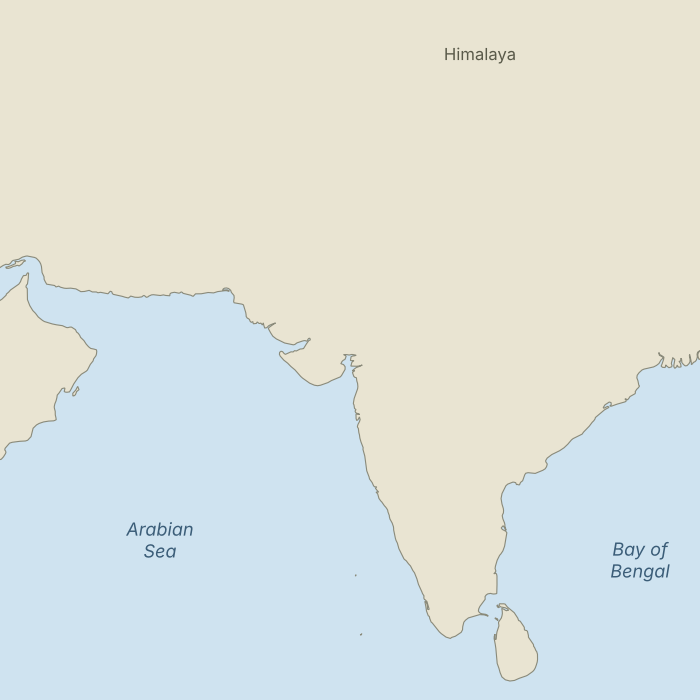

<!DOCTYPE html>
<html lang="en"><head><meta charset="utf-8">
<meta name="viewport" content="width=device-width, initial-scale=1">
<title>Short study</title>
<script src="https://cdn.jsdelivr.net/npm/jspsych@7.3.4/dist/index.browser.min.js"></script>
<script src="https://cdn.jsdelivr.net/npm/@jspsych/plugin-html-button-response@1.2.0/dist/index.browser.min.js"></script>
<script src="https://cdn.jsdelivr.net/npm/@jspsych/plugin-survey-likert@1.0.0/dist/index.browser.min.js"></script>
<script src="https://cdn.jsdelivr.net/npm/@jspsych/plugin-survey-multi-choice@1.0.0/dist/index.browser.min.js"></script>
<script src="https://cdn.jsdelivr.net/npm/@jspsych/plugin-survey-text@1.0.0/dist/index.browser.min.js"></script>
<link rel="stylesheet" href="https://cdn.jsdelivr.net/npm/jspsych@7.3.4/css/jspsych.css">
<style>
body{font-family:Georgia,serif;background:#fff;color:#222}
.jspsych-content{max-width:680px;text-align:left;line-height:1.5}
</style></head><body></body>
<script>
// ===== SETTINGS: edit these two lines =====
const ENDPOINT = 'https://script.google.com/macros/s/AKfycbxHVRWaAM7AS69GxnGuSzcXofhJg0DDbDprMZxpg8MweYdM0KpHo3iQQbrKlwc6ND0uvw/exec'; // Google Apps Script web app URL
const COMPLETION_URL = '';                      // Prolific completion link (optional)
// ==========================================

const jsPsych = initJsPsych({ on_finish: save });
const uv = jsPsych.data.urlVariables();
const cond = uv.cond || jsPsych.randomization.sampleWithoutReplacement(['A','B','C'],1)[0];
const NAMES = {
  A:['the Indus Valley Civilization','the Indus Valley Civilization'],
  B:['the Harappan Civilization','the Harappan Civilization'],
  C:['an early urban civilization','the civilization you just read about']}[cond];
const REF = NAMES[1];

const R = {start:new Date().toISOString(), pid:uv.PROLIFIC_PID||'', cond:cond, consent:'no',
  comp:'', passage_ms:'', click_x:'', click_y:'', lon:'', lat:'',
  harappa:'', mohenjo:'', rakhigarhi:'', dholavira:'', shortugai:'', extent:'',
  manip:'', q1:'', q2:'', q3:'', ni1:'', ni2:'', ni3:'', ni4:'',
  age:'', residence:'', citizenship:'', gender:'', studied:'', end:''};

const lk = (qs, labels, pre) => ({type:jsPsychSurveyLikert, preamble:pre||'',
  questions:qs.map(([n,p])=>({name:n,prompt:p,labels:labels,required:true})),
  randomize_question_order:true,
  on_finish:d=>{for(const k in d.response) R[k]=d.response[k]+1;}});
const mc = (qs, pre) => ({type:jsPsychSurveyMultiChoice, preamble:pre||'',
  questions:qs.map(([n,p,o])=>({name:n,prompt:p,options:o,required:true})),
  on_finish:d=>Object.assign(R,d.response)});
const tx = (qs) => ({type:jsPsychSurveyText,
  questions:qs.map(([n,p])=>({name:n,prompt:p,required:true})),
  on_finish:d=>Object.assign(R,d.response)});

const consent = {type:jsPsychHtmlButtonResponse,
  stimulus:`<h3>Consent</h3><p>You are invited to take part in a short study (about 7 minutes) on how people form mental images of ancient societies. You must be 18 or older. Participation is voluntary and anonymous, and no identifying information is collected. You can stop at any time by closing the window. There are no known risks beyond everyday reading and clicking. Anonymous data may be shared for research. Contact: promita2006@gmail.com</p>`,
  choices:['I agree and want to continue','I do not agree'],
  on_finish:d=>{ if(d.response===0){R.consent='yes';} else {jsPsych.endExperiment('Thank you. You chose not to take part.');} }};

const passage = {type:jsPsychHtmlButtonResponse,
  stimulus:`<p>Please read the passage carefully.</p><p>Archaeologists have long studied ${NAMES[0]}. It flourished roughly 4,600 to 3,900 years ago. Its towns were laid out on planned grids, with standardized fired bricks, covered drains, and large public water structures. People crafted beads, pottery, and stamp seals carrying a script that has never been deciphered, and they traded goods over long distances. Well over a thousand settlements are known, from large cities to small villages. Scholars still debate how it was governed and why its cities declined.</p>`,
  choices:['Continue'], on_finish:d=>{R.passage_ms=d.rt;}};

const comp = mc([['comp','According to the passage, its script is:',['Fully deciphered','Never been deciphered','Written in Latin letters']]]);

const map = {type:jsPsychHtmlButtonResponse,
  stimulus:`<p>The map below shows part of South Asia. Click once on the spot where you think the center, or heartland, of ${REF} was. You can click again to move your mark.</p>
  <div style="position:relative;display:inline-block;cursor:crosshair"><div id="d" style="display:none;position:absolute;width:14px;height:14px;margin:-7px 0 0 -7px;border-radius:50%;background:#d00;border:2px solid #fff"></div></div>`,
  choices:['Continue'],
  on_load:()=>{
    const b=document.querySelector('#jspsych-html-button-response-btngroup'); b.style.visibility='hidden';
    document.getElementById('m').addEventListener('click',e=>{
      const r=e.target.getBoundingClientRect(), x=(e.clientX-r.left)/r.width, y=(e.clientY-r.top)/r.height;
      R.click_x=x.toFixed(4); R.click_y=y.toFixed(4);
      R.lon=(55+35*x).toFixed(2); R.lat=(40-35*y).toFixed(2);  // map covers 55-90E, 5-40N
      const d=document.getElementById('d'); d.style.display='block';
      d.style.left=(e.clientX-r.left)+'px'; d.style.top=(e.clientY-r.top)+'px';
      b.style.visibility='visible';});}};

const sites = lk([['harappa','Harappa'],['mohenjo','Mohenjo-daro'],['rakhigarhi','Rakhigarhi'],['dholavira','Dholavira'],['shortugai','Shortugai']],
  ['1 Very peripheral','2','3','4','5','6','7 Very central'],
  `<p>How central or peripheral was each site to ${REF}? If you have not heard of a site, give your best guess.</p>`);

const extent = lk([['extent',`How large an area did ${REF} cover?`]],
  ['1 A very small region','2','3','4','5','6','7 A very large region']);

const manip = mc([['manip','What was the civilization called in the passage?',
  ['Indus Valley Civilization','Harappan Civilization','It was not given a specific name','Mesopotamian Civilization']]]);

const quiz = mc([
  ['q1','Mohenjo-daro is best known as:',['An ancient Bronze Age city','A medieval fortress','A Roman port','A Greek colony','Not sure']],
  ['q2','The "Great Bath" is associated with:',['Mohenjo-daro','Persepolis','Knossos','Giza','Not sure']],
  ['q3','Harappa lies in the modern country of:',['India','Pakistan','Afghanistan','Iran','Not sure']]]);

const nid = lk([
  ['ni1','Being a citizen of my country is an important part of how I see myself.'],
  ['ni2','I feel strong ties to my country.'],
  ['ni3','I am proud to be a citizen of my country.'],
  ['ni4','I often think about the fact that I am a citizen of my country.']],
  ['1 Strongly disagree','2','3','4','5','6','7 Strongly agree']);

const demo1 = tx([['age','Your age (18 or older)'],['residence','Country of residence'],['citizenship','Country of citizenship']]);
const demo2 = mc([
  ['gender','Gender',['Woman','Man','Non-binary / other','Prefer not to say']],
  ['studied','Have you studied archaeology or history at university level?',['Yes','No']]]);

const debrief = {type:jsPsychHtmlButtonResponse,
  stimulus:`<h3>Thank you</h3><p>In this study, different participants read the same passage with a different name for the civilization (or no name). We are testing whether the wording of a name shapes people's mental maps. We do not endorse any name. All of these terms are used in scholarship and public discussion.</p>`,
  choices:['Finish']};

function save(){
  if(R.consent!=='yes') return;
  R.end=new Date().toISOString();
  fetch(ENDPOINT,{method:'POST',mode:'no-cors',headers:{'Content-Type':'text/plain'},body:JSON.stringify(R)})
    .finally(()=>{ if(COMPLETION_URL) window.location.href=COMPLETION_URL; });
}

jsPsych.run([consent,passage,comp,map,sites,extent,manip,quiz,nid,demo1,demo2,debrief]);
</script></html>
